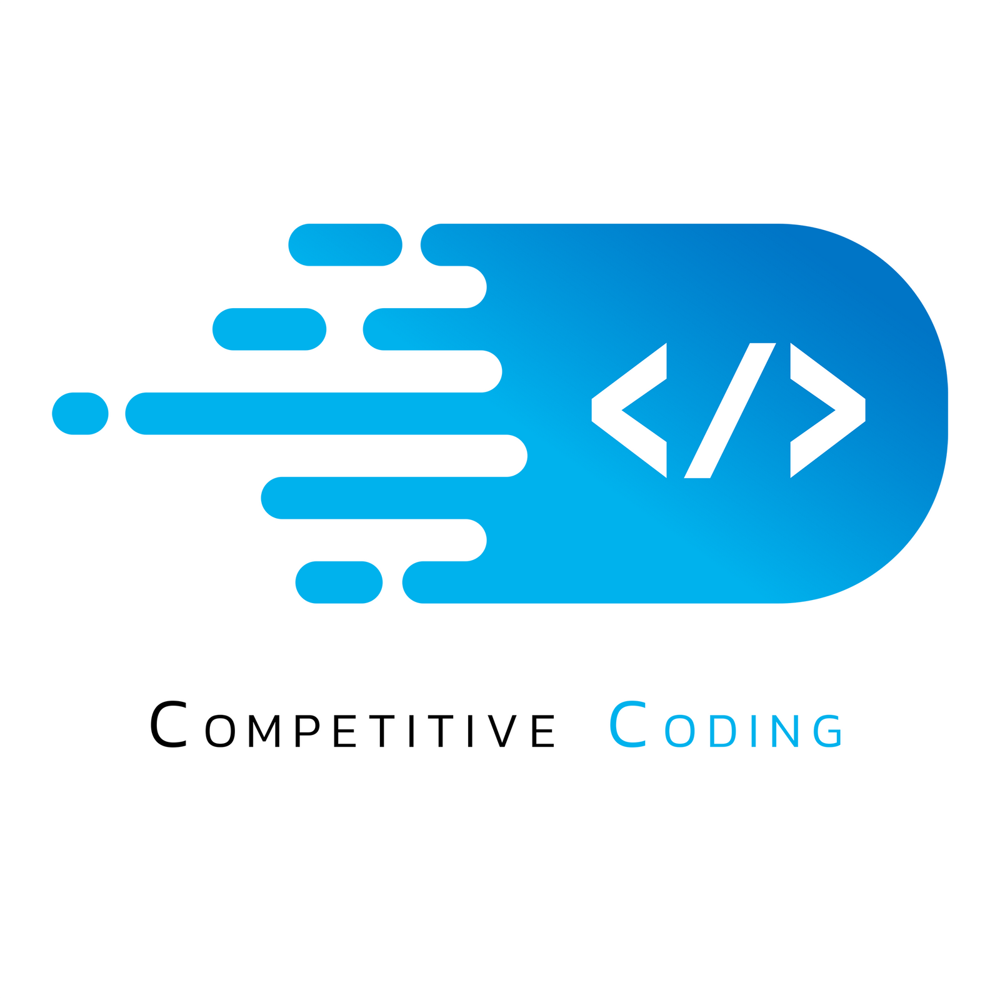
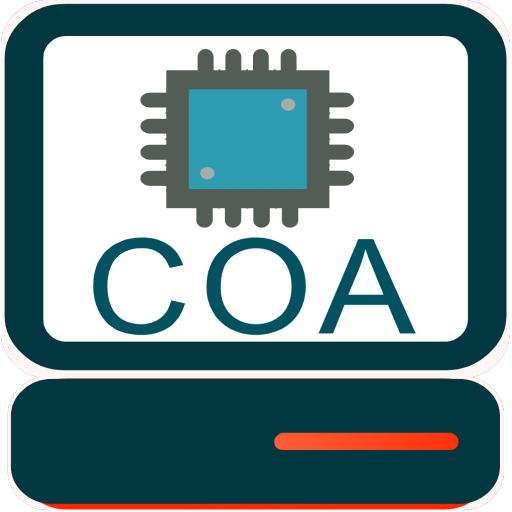

Web Development

This is the fun part where I get to build things that people love. I thrive on designing both the user experience (UX) and the backend, ensuring that every interaction is seamless and every system is robust. The creative process of crafting intuitive interfaces and powerful backend solutions is incredibly fulfilling. I also have a passion for experimenting with the latest technologies, constantly exploring new tools and frameworks to push the boundaries of what’s possible. This blend of design and innovation allows me to create engaging, high-quality products that resonate with users and meet their needs in exciting new ways.
Competitive Coding
Diving into the world of competitive programming has been a transformative journey, much like exploring an intricate puzzle with infinite solutions. Through consistent practice and problem-solving, I've honed my skills in various data structures and algorithms, mastering the art of tweaking them to fit diverse challenges. My fluency in Java has been a cornerstone of this journey, enabling me to write efficient, elegant code that meets the rigorous demands of competitive coding. Each problem solved not only sharpens my technical skills but also fuels my passion for turning complex problems into elegant solutions.
Scalable Architecture Design
I have a deep passion for learning about scalable architectures and all their intricate aspects. The challenge of designing systems that can efficiently grow and adapt is both intellectually stimulating and immensely rewarding. In parallel, my fascination with microcontroller chips, such as ARM and 8051, has driven me to delve into their inner workings and applications. Understanding how these chips function at a fundamental level not only broadens my technical horizons but also enhances my ability to create innovative, high-performance solutions. This dual interest in scalable systems and microcontroller technology fuels my continuous pursuit of knowledge and excellence in the field.
AWS Cloud Architecture

Studying for the AWS Certified Cloud Practitioner exam feels like embarking on a thrilling journey into the heart of the cloud. With every topic I delve into, I uncover the incredible power and potential of Amazon Web Services. It's not just about acing an exam; it's about embracing a whole new world of cloud computing possibilities.
Machine Learning

Diving into the world of machine learning with pandas and numpy feels like opening a gateway to a realm of endless possibilities. Each concept and technique mastered with these powerful libraries unveils new dimensions of data manipulation and analysis. It's not just about learning the syntax; it's about unlocking the potential to turn data into actionable insights and innovative solutions.